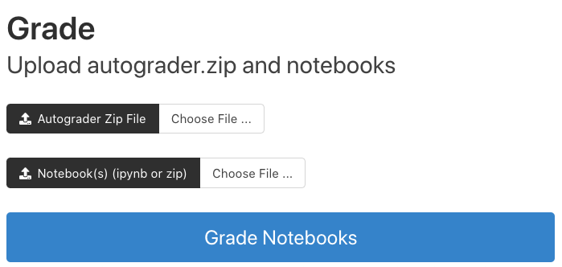
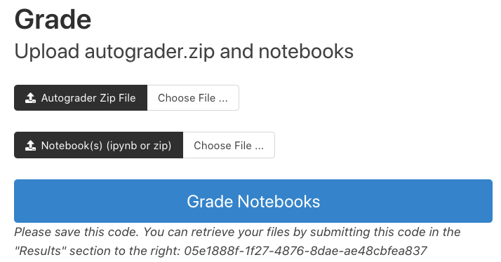
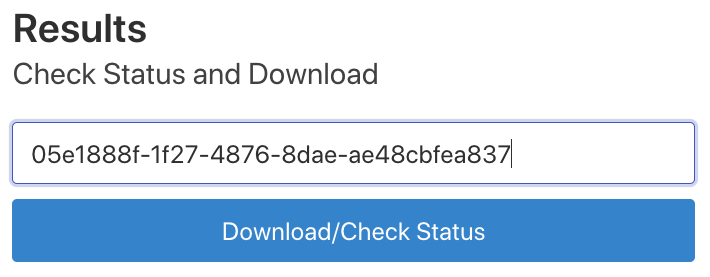

Otter Service Standalone#
The following screen recording illustrates how to use otter grader standalone to grade your notebooks.
The service is at https://grader.datahub.berkeley.edu/
Step 1: Authorization
In order to access the service, we need to add your GitHub username to our otter service organization. Once you have been added and accepted the invitation by clicking here you can use the grader service by logging into your GitHub account.
Step 2: Download your student submissions
You can grade a folder of notebooks by compressing the folder into a zip file and then uploading that zip file or you can grade one notebook at a time by uploading the notebook itself.
Step 3: Download solution files(autograder.zip)
If you visit our GitHub repository, materials-fds-private, and browse to the folder, autograder_zips, you will find the solutions to your assignment. Download the autograder.zip.
If you do not have access to this repository, please email us for access.
Step 4: Upload the student notebooks and autograder.zip to the service.
In the “Grade” section, upload your autograde.zip and the student submissions from the previous step and press the “Grade Notebooks” button.

After you press the “Grade Notebooks” button, a “download” code appears under the button. You will need this code for the next step.

Part 5: Downloading your results
At this point, you have to wait and guess as to when the notebooks are done being graded. The system takes about one minute per ten notebooks but this can vary. We hope to have an update to the system that will show you how long you have until the process finishes soon.
Once you have waited, you will enter the code from Step 4 into the “Results” section on the right-side of the page and a folder with a log file and csv file will be downloaded. The csv file contains the grades by notebook. If you have problems, the log file may indicate what the problem is.
